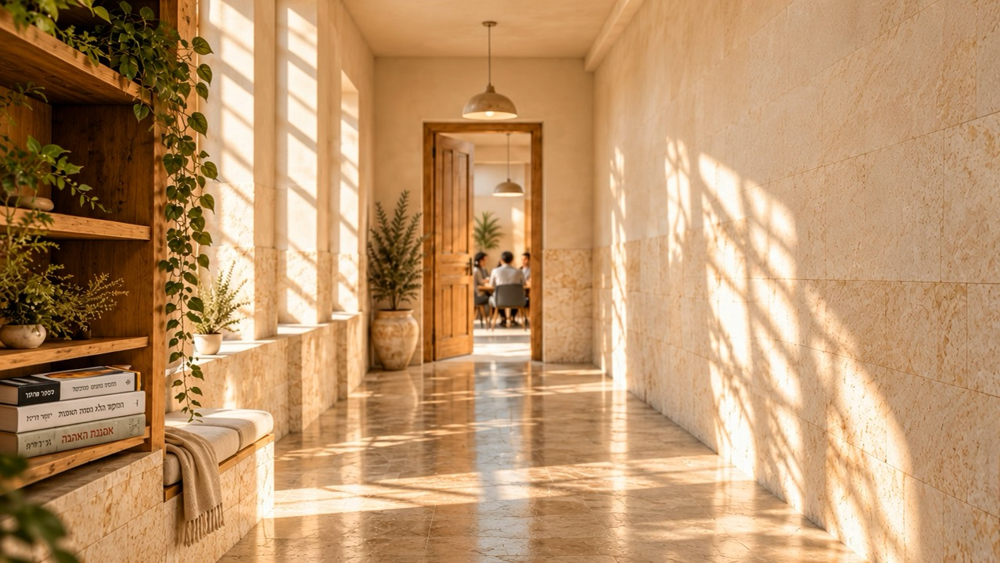

מה מעניק משמעות לעשייה?

משיבי רוח
סדנאות משמעות ורוח במקומות העבודה
מרחב לחשיבה על משמעות, זהות ותכלית בעולם עבודה המשתנה במהירות.
להזמנת סדנאהאתגר האנושי בעולם העבודה
ארגונים רבים משקיעים ברווחה, בהכשרות ובפיתוח מקצועי. אך לצד האתגרים המקצועיים מתעוררות גם שאלות אנושיות עמוקות יותר
כיצד מתמודדים עם חוסר ודאות?
מה מחבר בין האדם לבין עבודתו?
כיצד בונים חוסן אישי וקהילתי?
התוכן פוגש את החיים
ארבעה מרחבי עיסוק
כל מרחב פותח שאלה אחרת ומציע דרך חדשה להביט על העבודה ועל עצמנו.
משמעות בעבודה
חקירת מקורות המשמעות של האדם והקשר לעשייה מקצועית.
חוסן בתקופות משבר
כלים ותובנות להתמודדות עם אי-ודאות ושחיקה.
זהות ושייכות
עיסוק בזהות אישית, קהילתית וישראלית.
מקורות השראה
מפגש עם פילוסופיה, פסיכולוגיה ומקורות יהודיים-ישראליים.
הייחוד שלנו
לא תשובות מהירות.
מרחב למחשבה.
מסורת ארוכה של עיסוק בשאלות החיים הגדולות
01/04
פילוסופיה מודרנית
לשאול מחדש את מה שנדמה מובן מאליו
גללו להמשך
- פילוסופיה מודרנית
- מקורות יהודיים
- שיח ישראלי עכשווי
- למידה דיאלוגית
פילוסופיה מודרנית
לשאול מחדש את מה שנדמה מובן מאליו
מקורות יהודיים
מפגש מחודש עם טקסטים חיים
שיח ישראלי עכשווי
דיאלוג על החברה, הזהות והעתיד
למידה דיאלוגית
קהילה שחושבת יחד
משיבי רוח
מסגרות שבהן התהליך עובד
מרחב למחשבה, בכל מסגרת.-
הכשרות עובדים
-
ימי עיון
-
תהליכי פיתוח מנהלים
-
צוותים בתקופות שינוי
-
קהילות מקצועיות
-
תוכניות חוסן
על המנחה
יובל קופיט
חיבור בין עולמות הרוח לבין המציאות הישראלית
תואר ראשון בפילוסופיה, מכללת שלם
עיסוק בפילוסופיה ובשאלות של משמעות
ניסיון בהנחיית קבוצות ותהליכי למידה
בואו נפתח בארגון שיחה על מה שבאמת חשוב
השאירו פרטים ונחזור אליכם לתיאום שיחת היכרות קצרה.